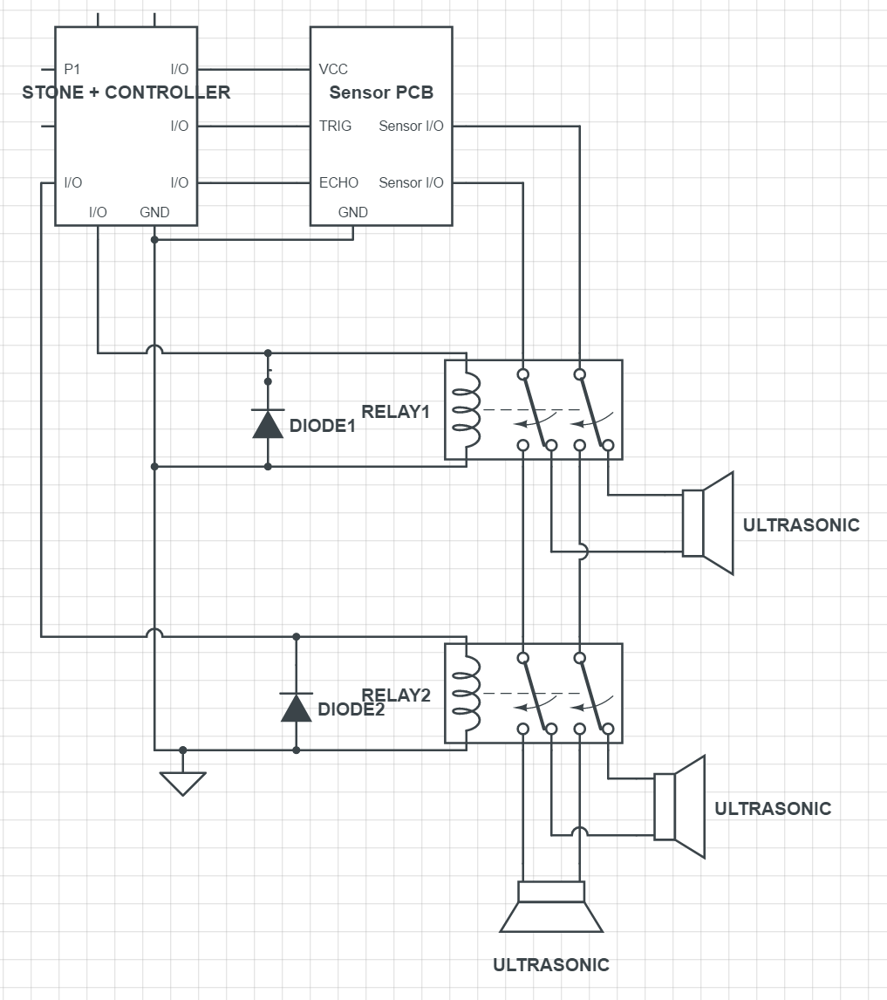
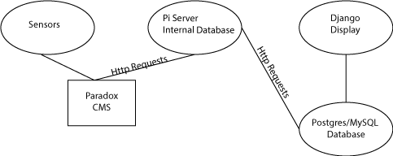

After we called OSISoft, we started looking for the server that would be able to meet our requirements for the project. The basic specs that we are looking for in our server is a quad-core processor and 6-8 GB of RAM. We have created a Google Sheet that will organize our findings. Later in the day, we assigned one team member to making and designing footprints for the PE Stone Board. The other members of the team were assigned with completing the Django tutorial for application development in the future. Also, we found out more information regarding the project through Mario. We also finished the circuit diagram for the sensor.
Today, we drew up the engineering schematics for the the sensor board. The engineering team also researched antennas for the board. The interns worked on finishing programming tutorials. Also, they were able to update the midro.github.io site to make it more organized and visually appealing. The software team started making the rough web app using Django. It will display the trash levels and more information. Below is the layout of the overall project that we are trying to accomplish.
